| 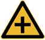 |
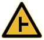 |
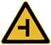 |
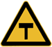 |
| 十字交叉 |
T形交叉 |
T形交叉 |
T形交叉 |
| 除了基本形十字路口外，还有部分变异的十字路口，如：五路交叉路口、变形十字路口、变形五路交叉路口等。五路以上的路口均按十字路口对待。 |
丁字形标志原则上设在与交叉口形状相符的道路上。右侧丁字路口，此标志设在进入T字路口以前的适当位置。 |
丁字形标志原则上设在与交叉口形状相符的道路上。左侧丁字路口此标志设在进入丁字路口以前的适当位置。 |
丁字形标志原则上设在与交叉口形状相符的道路上。此标志设在进入T字路口以前的适当位置。 |
| 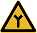 |
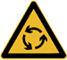 |
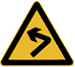 |
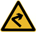 |
| Y形交叉 |
环形交叉 |
向左急弯路 |
向右急弯路 |
| 设在Y形路口以前的适当位置。 |
有的环形交叉路口，由于受线形限制或障碍物阻挡，此标志设在面对来车的路口的正面。 |
向左急弯路标志设在左急转弯的道路前方适当位置。 |
向右急弯路标志，设在右急转弯的道路前方适当位置。 |
| 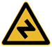 |
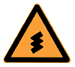 |
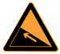 |
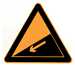 |
| 反向弯路 |
连续弯路 |
上陡坡 |
下陡坡 |
| 此标志设在两个相邻的方向相反的弯路前适当位置。 |
此标志设在有连续三个以上弯路的道路以前适当位置。 |
此标志设在纵坡度在7%和市区纵坡度在大于4%的陡坡道路前适当位置。 |
此标志设在纵坡度在7%和市区纵坡度在大于4%的陡坡道路前适当位置。 |
| 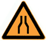 |
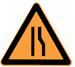 |
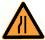 |
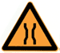 |
| 两侧变窄 |
右侧变窄 |
左侧变窄 |
窄桥 |
| 车行道两侧变窄主要指沿道路中心线对城缩窄的道路；此标志设在窄路以前适当位置。 |
表示车行道右侧缩窄。此标志设在窄路以前适当位置。 |
车行道左侧缩窄。此标志设在窄路以前适当位置。 |
此标志设在桥面宽度小于路面宽度的窄桥以前适当位置。 |
| 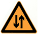 |
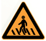 |
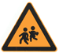 |
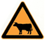 |
| 双向交通 |
注意行人 |
注意儿童 |
注意牲畜 |
| 表示双向行驶的道路上，采用天然的或人工的隔离措施，把上下行交通完全分离，由于某种原因（施工、桥、隧道）形成无隔离的双向车道时，须设置此标志。 |
一般设在郊外道路上划有人行横道的前方。城市道路上因人行横道线较多，可根据实际需要设置。 |
此标志设在小学、幼儿园、少年宫、儿童游乐场等儿童频繁出入的场所或通道处。 |
此标志设在经常有牲畜活动的路段特别是视线不良的路段以前适当位置。 |
| 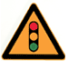 |
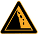 |
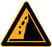 |
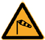 |
| 注意信号灯 |
注意落石 |
注意落石 |
注意横风 |
| 此标志设在不易发现前方位信号灯控制的路口前适当位置。 |
此标志设在左侧有落石危险的傍山路段之前适当位置。 |
此标志设在右侧有落石危险的傍山路段之前适当位置。 |
此标志设在经常有很强的侧风并有必要引起注意的路段前适当位置。 |
| 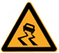 |
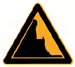 |
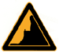 |
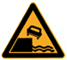 |
| 易滑 |
傍山险路 |
傍山险路 |
堤坝路 |
| 此标志设在路面的摩擦系数不能满足相应行驶速度下要求紧急刹车距离的路段前适当位置。行驶至此路段必须减速慢行。 |
此标志设在山区地势险要路段（道路外侧位陡壁、悬崖危险的路段）以前适当位置。 |
此标志设在山区地势险要路段（道路外侧位陡壁、悬崖危险的路段）以前适当位置。 |
此标志设在沿水库、湖泊、河流等堤坝路以前适当位置。 |
| 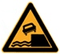 |
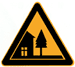 |
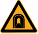 |
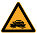 |
| 堤坝路 |
村庄 |
隧道 |
渡口 |
| 此标志设在沿水库、湖泊、河流等堤坝路以前适当位置。 |
此标志设在不易发现前方有村庄或小城镇的路段以前适当位置。 |
此标志设在进入隧道前的适当位置。 |
此标志设在汽车渡口以前适当位置。特别是有的渡口地形较位复杂、道路条件较差，使用此标志能引起驾驶员的谨慎驾驶、注意安全。 |
 |
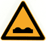 |
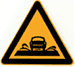 |
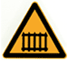 |
| 驼峰桥 |
路面不平 |
过水路面 |
有人看守铁路道口 |
| 此标志设在注意前方是拱度较大，不易发现对方来车，应靠右侧行驶并应减速慢行。 |
此标志设在路面不平的路段以前适当位置。 |
此标志设在过水路面或漫水桥路段以前适当位置。 |
此标志设在不易发现的道口以前适当位置。 |
| 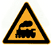 |
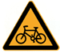 |
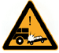 |
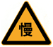 |
| 无人看守铁路道口 |
注意非机动车 |
事故易发路段 |
慢行 |
| 此标志设在道口以前适当位置。 |
此标志设在混合行驶的道路并经常有非机动车横穿、出入的地点以前适当位置。 |
此标志设在交通事故易发路段以前适当位置。 |
此标志设在前方需要减速慢行的路段以前适当位置。 |
| 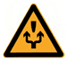 |
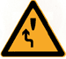 |
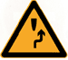 |
|
| 左右绕行 |
左侧绕行 |
右侧绕行 |
施工 |
| 此标志表示有障碍物座 左右侧绕行，放置在路段前适当位置。 |
此标志表示有障碍物左侧绕行，放置在路段前适当位置。 |
此标志表示有障碍物右侧绕行，放置在路段前适当位置。 |
此标志可作为临时标志设在施工路段以前适当位置。 |
| 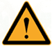 |
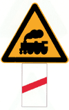 |
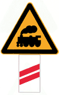 |
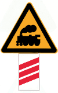 |
| 注意危险 |
斜杠符号 |
斜杠符号 |
斜杠符号 |
| 此标志设在以上标志不能包括在其他危险路段以前适当位置。 |
表示距无人看守铁路道口的距离为50m。 |
表示距无人看守铁路道口的距离100m。 |
表示距无人看守铁路道口的距离为150m。 |
|
|
|
|
| 叉形符号 |
|
|
|
| 表示多股铁道与道路交叉设在无人看守铁路道口标志上端。 |
|
|
|
|
|
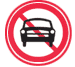 |
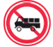 |
| 禁止通行 |
禁止驶入 |
除公共汽车外 |
禁止机动车通行 |
| 表示禁止一切车辆和行人通行。此标志设在禁止通行的道路入口处。 |
表示禁止车辆驶入。此标志设在禁止驶入的路段入口处。 |
表示禁止某种机动车通行。此标志设在禁止机动车通行的路段入口处。 |
表示禁止载货机动车通行。此标志设在载货机动车通行的路段入口处。 |
 |
|
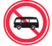 |
|
| 禁止三轮机动车通行 |
禁止大型客车通行 |
禁止小型客车通行 |
禁止汽车拖、挂车通行 |
| 表示禁止三轮机动车通行。此标志设在禁止三轮机动车通行的路段入口处。 |
表示禁止大型客车通行。此标志设在禁止大型客车通行的路段入口处。 |
表示禁止小型客车通行。此标志设在禁止小型客车通行的路段入口处。 |
表示禁止汽车拖、挂车通行。此标志设在禁止汽车拖、挂车通行的路段入口处。 |
| 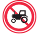 |
|
|
|
| 禁止拖拉机通行 |
禁止农用车通行 |
禁止二轮摩托车通行 |
禁止某两种车通行 |
| 表示禁止拖拉机通行。此标志设在禁止拖拉机通行的路段入口处。 |
表示禁止农用运输车通行。此标志设在禁止农用运输车通行的路段入口处。 |
表示禁止两轮摩托车通行。此标志设在禁止两轮摩托车通行的路段入口处。 |
表示禁止某两种车通行。此标志设在禁止某两种车通行的路段入口处. |
|
|
|
|
| 禁止非机动车通行 |
禁止畜力车通行 |
禁止人力货运三轮车通行 |
禁止人力客运三轮车通行 |
| 表示禁止非机动车通行。此标志设在禁止非机动车通行的路段入口处。 |
表示禁止畜力车通行。此标志设在禁止畜力车通行的路段入口处。 |
表示禁止人力货运三轮车通行。此标志设在禁止人力货运三轮车通行的路段入口处。 |
表示禁止人力客运三轮车通行。此标志设在禁止人力客运三轮车通行的路段入口处。 |
|
|
|
|
| 禁止人力车通行 |
禁止骑自行车下坡 |
禁止骑自行车上坡 |
禁止行人通行 |
| 表示禁止人力车通行。此标志设在禁止人力车通行的路段入口处。 |
表示禁止骑自行车下坡通行。此标志设在禁止骑自行车下坡通行的路段入口处。 |
表示禁止骑自行车上坡通行。此标志设在禁止骑自行车上坡通行的路段入口处。 |
表示禁止行人通行。此标志设在禁止行人通行的路段入口处。 |
|
|
|
|
| 禁止向左转弯 |
禁止向右转弯 |
禁止直行 |
禁止向左向右转弯 |
| 表示前方路口禁止一切车辆向左转弯。此标志设在禁止向左转弯的路口前适当位置。 |
表示前方路口禁止一切车辆向右转弯。此标志设在禁止向右转弯的路口前适当位置。 |
表示前方路口禁止一切车辆直行。此标志设在禁止直行的路口前适当位置。 |
表示前方路口禁止一切车辆向左向右转弯。此标志设在禁止向左向右转弯的路口前适当位置。 |
|
|
|
|
| 禁止直行和向左转弯 |
禁止直行和向右转弯 |
禁止掉头 |
禁止超车 |
| 表示前方路口禁止一切车辆直行和向左转弯。此标志设在禁止直行和向左转弯的路口前适当位置。 |
表示前方路口禁止一切车辆直行和向右转弯。此标志设在禁止直行和向右转弯的路口前适当位置。 |
表示前方路口禁止一切车辆掉头。此标志设在禁止掉头的路口前适当位置。 |
表示该标志至前方解除禁止超车标志的路段内，不准机动车超车。此标志设在禁止超车的起点。 |
|
|
|
|
| 解除禁止超车 |
禁止车辆临时或长时停放 |
禁止车辆长时停放 |
禁止鸣喇叭 |
| 表示禁止超车路段结束。此标志设在禁止超车的终点。 |
表示在限定的范围内，禁止一切车辆临时或长时停放。此标志设在禁止车辆停放的地方。禁止车辆停放的时间、车种和范围可用辅助标志说明。 |
禁止车辆长时停放，临时停放不受限制。禁止车辆停放的时间、车种和范围可用辅助标志说明。 |
表示禁止鸣喇叭。此标志设在需要禁止鸣喇叭的地方。禁止鸣喇叭的时间和范围可用辅助标志说明。 |
|
|
|
|
| 限制宽度 |
限制高度 |
限制质量 |
限制轴重 |
| 表示禁止装载宽度超过标志所示数值的车辆通行。此标志设在最大允许宽度受限制的地方。 以图为例：装载宽度不得超过3米 |
表示禁止装载高度超过标志所示数值的车辆通行。此标志设在最大允许高度受限制的地方。 以图为例：装载高度不得超过3.5米。 |
表示禁止总质量超过标志所示数值的车辆通行。此标志设在需要限制车辆质量的桥梁两端。以图为例：装载总质量不得超过10t。 |
表示禁止轴重超过标志所示数值的车辆通行。此标志设在需要限制车辆轴重的桥梁两端。以图为例：限制车辆轴重量不得超过7t。 |
|
|
|
|
| 限制速度 |
解除限制速度 |
停车检查 |
停车让行 |
| 表示该标志至前方限制速度标志的路段内，机动车行驶速度不得超过标志所示数值。此标志设在需要限制车辆速度的路段的起点。以图为例：限制行驶时速不得超过40公里。 |
表示限制速度路段结束。此标志设在限制车辆速度路段的重点。 |
表示机动车必须停车接受检查。此标志设在关卡将近处，以便要求车辆接受检查或缴费等手续。标志中可加注说明检查事项。 |
表示车辆必须在停止线以外停车了望，确认安全后，才准许通行。停车让行标志在下列情况下设置：(1)与交通流量较大的干路平交的支路路口；(2)无人看守的铁路道口；(3)其他需要设置的地方。 |
|
|
|
|
| 减速让行 |
会车让行 |
禁止运输危险物品车辆驶入标志 |
|
| 表示车辆应减速让行，告示车辆驾驶员必须慢行或停车，观察干路行车情况，在确保干道车辆优先的前提下，认为安全时方可续行。此标志设在视线良好交叉道路的次要路口。 |
表示车辆会车时，必须停车让对方车先行。设置在会车有困难的狭窄路段的一端或由于某种原因只能开放一条车道作双向通行路段的一端。 |
表示禁止运输危险物品车辆驶入。设在禁止运输危险物品车辆驶入路段的入口处。 |
|
|
|
|
|
| 直行 |
向左转弯 |
向右转弯 |
直行和向左转弯 |
| 表示只准一切车辆直行。此标志设在直行的路口以前适当位置。 |
表示只准一切车辆向左转弯。此标志设在车辆必须向左转弯的路口以前适当位置。 |
表示只准一切车辆向右转弯。此标志设在车辆必须向右转弯的路口以前适当位置。 |
表示只准一切车辆直行和向左转弯。此标志设在车辆必须直行和向左转弯的路口以前适当位置。 |
|
|
|
|
| 直行和向右转弯 |
向左和向右转弯 |
靠右侧道路行驶 |
靠左侧道路行驶 |
| 表示只准一切车辆直行和向右转弯。此标志设在车辆必须直行和向右转弯）的路口以前适当位置。 |
表示只准一切车辆向左和向右转弯。此标志设在车辆必须向左和向右转弯的路口以前适当位置。 |
表示只准一切车辆靠右侧道路行驶。此标志设在车辆必须靠右侧行驶的路口以前适当位置。 |
表示只准一切车辆靠左侧）道路行驶。此标志设在车辆必须靠左侧行驶的路口以前适当位置。 |
|
|
|
|
| 立交直行和左转弯行驶 |
立交直行和右转弯行驶 |
环岛行驶 |
步行 |
| 表示车辆在立交处可以直行和按图示路线左转弯行驶。此标志设在立交左转弯出口处适当位置。 |
表表示车辆在立交处可以直行和按图示路线右转弯行驶。此标志设在立交右转弯出口处适当位置。 |
表示只准车辆靠右环行。此标志设在环岛面向路口来车方向适当位置。 |
表示该街道只供步行。此标志设在步行街的两端。 |
|
|
|
|
| 鸣喇叭 |
最低限速 |
单行路向左或向右 |
单行路 直行 |
| 表示机动车行至该标志处必须鸣喇叭。此标志设在公路的急转弯处、陡坡等视线不良路段的起点。 |
表示机动车驶入前方道路之最低时速限制。此标志设在高速公路或其他道路限速路段的起点。 |
表示一切车辆向左或向右单向行驶。此标志设在单行路的路口和入口处的适当位置。 |
表示一切车辆单向行驶。此标志设在单行路的路口和入口处的适当位置。 |
|
|
|
|
| 干路先行 |
会车先行 |
人行横道 |
右转车道 |
| 表示干路先行，此标志设在车道以前适当位置。 |
表示会车先行，此标志设在车道以前适当位置。 |
表示该处为专供行人横穿马路的通道。此标志设在人行横道的两侧。 |
表示车道的行驶方向。此标志设在导向车道以前适当位置。 |
|
|
|
|
| 直行车道 |
直行和有转合用车道 |
分向行驶车道 |
公交线路专用车道 |
| 表示车道的行驶方向。此标志设在导向车道以前适当位置。 |
表示车道的行驶方向。此标志设在导向车道以前适当位置。 |
表示车道的行驶方向。此标志设在导向车道以前适当位置。 |
表示该车道专供本线路行驶的公交车辆行驶。此标志设在进入该车道的起点及各交叉口入口处以前适当位置。 |
|
|
 |
|
| 机动车行驶 |
机动车车道 |
非机动车行驶 |
非机动车车道 |
| 表示车道机动车行驶。此标志设在道路或车道的起点及交叉路口入口处前适当位置。 |
表示该道路或车道专供机动车行驶。此标志设在道路或车道的起点及交叉路口入口处前适当位置。 |
表示非机动车行驶。此标志设在道路或车道的起点及交叉路口入口处前适当位置。 |
表示该道路或车道专供非机动车行驶。此标志设在道路或车道的起点及交叉路口入口处前适当位置。 |
|
|
|
|
| 允许掉头 |
|
|
|
| 表示允许掉头。此标志设在允许机动车掉头路段的起点和路口以前适当位置。 |